A Tutorial on Graph-Based SLAM
はじめに
不確実性の下での地図の作成はSLAM問題と呼ばれる。この文献では、この問題に対するさまざまな使用可能である解決案がある。これらのアプローチは、フィルタリングまたは平滑化のいずれかに分類できる。フィルタリングアプローチは、システムの状態が現在のロボットの位置と地図で構成されるオンライン状態推定として問題をモデル化する。新しい測定値が利用可能になったときにそれを組み込むことによって、地図の拡張および改良を行う。有名な手法としてはカルマン情報フィルタ、パーティクルフィルタ等がある。これらは主にオンラインSLAMメソッドと呼ばれる。対して、平滑化アプローチは、測定した情報セットからロボットの完全な軌道を推定する。これらの手法は最小二乗問題として扱われる。SLAM問題に対処する直感的な方法は、いわゆるグラフベースによる定式化であろう。ロボットの姿勢やランドマークを頂点、それらを関係づけるセンサデータを辺としたグラフの解決により、SLAM問題を解くことが出来る。しかし、観測は常にノイズの影響を受けるため、このような制約が矛盾する可能性がある。このようなグラフが作成されると、測定値と最大限に一致するノードの構成を見つけることが重要な問題となる。これは、誤差最小化問題となる。
グラフベースSLAMは1997年にLuとMiliosらによって提案された。当時は複雑な計算が必要であったため流行らなかったが、現在では有力なアプローチとなっている。このチュートリアルの目的は、SOTA(state-of-the-art)なグラフベースのSLAMの理解へ読者を導くことである。このチュートリアルを理解するには、線形代数、多変量最小化、および確率論に関する十分な知識が必要である。
SLAMの確率論的定式化
m: 地図
 : ロボットの軌道
: ロボットの軌道
 : オドメトリ
: オドメトリ
 : 環境情報
: 環境情報
: ロボットの軌道: オドメトリ: 環境情報上記の変数の定義の上で完全SLAM問題は以下のように定義されます。

式01 完全SLAMの定式化
この「○○の仮定」という表現はSLAMの全てのデータは「推定したデータに過ぎない」という思想の元の表現であると思われる。が、知識不足の可能性の方が高いので、今後「マルコフの仮定」等の単語も調べる必要があるかもしれない。

図01 動的ベイズネットワーク
グラフベースSLAMの説明の多くは省かせて頂いた。その多くがSLAM入門と類似しており、これを読んでいるあなたはもう既に理解している事柄であるためである。
関連研究
ここに関連研究を挙げる。このチュートリアルではグラフベースSLAMに焦点を当てているので、そのようなアプローチを検討する。-
Lu, Milions
方程式全体を最適化することで誤差を減らし、地図を洗礼する手法を最初に提案した。 -
Gutmann, Konolige
増分推定アルゴリズムを実行しながらループ閉じ込みを検出する手法を提案した。これ以降、様々なネットワーク最適化の手法が提案された。 -
Howardetら
「relaxation」を適応してロボット位置を特定する。 -
Freseら
「multi-level Relaxation(MLR)」と呼ばれるGauss-Seidel relaxationを提案した。それは異なる解像度でのrelaxationを適用している。 -
Dellaert, Kaess
オフラインSLAMへの適応のために疎行列因数分解を用いた。 -
Kaesset ら
疎な因数分解を計算するために部分的な並び替えを利用したオンラインSLAM「ediSAM」を発表。 -
Konoligeet ら
線形化されたシステムを効率的に構築するためのポーズグラフ法のオープンソースで提案した。 -
Olson ら
確率的勾配降下法に基づいた効率的な最適化手法を提案。 -
Grisetti
Olsonのアプローチを拡張し、2Dと3Dのノードを木構造で扱うアプローチを提案した。 このようにして収束速度を向上させている。 -
GraphSLAM
最適化問題の次元を減らすために変数消去技術を用いている。 -
The ATLAS フレームワーク
2階層でグラフを構築し、最下層ではカルマン・フィルタを用い、第2レベルではローカルマップを整列させて大域最適化アプローチを行う。 -
Estrada ら
独立した小域地図を用いた「Hierarchical SLAM」を提案 -
Olson
フロントエンド部分でのスペクトルクラスタリングを用いた外れ値除去 -
N ̈uchter ら
3Dマッピングを統合的に行うSLAM -
Lu, Milios
Nuchterらの提案した3D SLAMの最適化
グラフベースSLAM
グラフベースSLAMでは生のセンサデータを抽象化した「仮想の測定値」で単純化された測定問題を構築します。何故なら、推定プロセスでデータを単純化せずに扱うと、組み合わせの複雑さが爆発的に増大することになる。そのため、ほとんどの実用的なアプローチでは、最も可能性の高いトポロジーに推定値を限定している。正しいデータ関連付けを計算するためには、フロントエンドではロボットの軌跡
 上の条件付き優先順位を一貫して推定する必要がある。ロボットが環境を探索する際には、フロントエンドとバックエンドの実行を連動させる必要があり、バックエンドの精度と効率性は、良いSLAMシステムを設計する上で非常に重要である。このチュートリアルでは、データ関連付け問題に対する高度なアプローチは説明しない。必要ならば、スペクトルクラスタリング、ジョイント互換性分岐とバインド、またはバックトラッキングを用いたアソシエーションに取り組もう。
上の条件付き優先順位を一貫して推定する必要がある。ロボットが環境を探索する際には、フロントエンドとバックエンドの実行を連動させる必要があり、バックエンドの精度と効率性は、良いSLAMシステムを設計する上で非常に重要である。このチュートリアルでは、データ関連付け問題に対する高度なアプローチは説明しない。必要ならば、スペクトルクラスタリング、ジョイント互換性分岐とバインド、またはバックトラッキングを用いたアソシエーションに取り組もう。観測値が正規分布に従ってノイズの影響を受けるとき、グラフベースマッピングアルゴリズムの目的はロボットの軌道の事後確率を求めることである。これは観測の尤度が最大になるようなグラフの構成を計算する問題だ。以下ではこの問題を制約最適化問題と呼び、以下に表記法を紹介する。
 は姿勢を示す行列であり、
は姿勢を示す行列であり、 及び
及び はノードi, jを接続するための仮想の測定値の入った情報行列である。この仮想測定は、iから取得した観測値とjから取得した観測値が最大限に重なるように変換したものだ。
はノードi, jを接続するための仮想の測定値の入った情報行列である。この仮想測定は、iから取得した観測値とjから取得した観測値が最大限に重なるように変換したものだ。 はノード xi, xj が与えられたときの可能の測定値を示す。
はノード xi, xj が与えられたときの可能の測定値を示す。 は観測した ^z_ij と実際の z_ij との誤差を示す。表記を簡単にするために、測定値の指標を誤差関数の指標で表す。
は観測した ^z_ij と実際の z_ij との誤差を示す。表記を簡単にするために、測定値の指標を誤差関数の指標で表す。

式02 誤差関数

式03 目的関数F(x)

図02 グラフのエッジを定義するための関数とその量
xi と xj の接続を示す図。これらは計測値 zij に由来する。xi, xjから逆に計測値 ^zの計算も可能である。eij は誤差関数を示し、実際の測定値と期待した測定値との誤差を表す。エッジはその誤差関数とその不確かさを測定する情報行列 Ωij によって特徴づけられる。
反復的局所線形化による誤差最小化
ロボットの姿勢の初期推定値̆xがわかっていれば、一般的なガウス・ニュートン法またはLevenberg-Marquardtアルゴリズムを使用して、式03のx*の数値解を得ることができる。それには、現在の初期推定値̆xを中心とした一次テイラー展開によって誤差関数を近似することでできる。


 とすることで(13) から (14) の変換を行っている。そしてΛxを最小化することで解くことが可能である。
とすることで(13) から (14) の変換を行っている。そしてΛxを最小化することで解くことが可能である。


この式(16)で求められた x* が上の式03内の観測値の負の対数尤度 F(x) を最小にするノードの構成である。
線形化されたシステムへの考察
式(14)から、行列Hとベクトルbは、制約ごとに1つずつの行列とベクトルを合計することで得られる。全ての制約条件はシステムに負荷項をもたらす。この加算による構造は誤差関数のヤコビ行列に依存する。制約の誤差関数は2つのノードの値にのみ依存するため、(7)のヤコビ行列は次のような形になる。

アルゴリズム1は、ロボットの姿勢に関する事後情報の平均値と情報行列を決定する反復的なガウス・ニュートン法を要約したものである。システムのほとんどの構造は疎であるため、システムのヘッセ行列Hを保存するには、メモリ効率の良い表現を使用したほうが良い。ヘッセ行列の構造は、グラフの接続性から事前に知られているので、反復の最初に一度だけヘッセ行列を事前に割り当て、新たな線形化が必要なときに、すべてのエッジをループしてその場で更新したほうが良い。 各エッジは、ブロックH[ii]、H[ij]、H[ji]、H[jj]と、係数ベクトルのブロックb[i]およびb[j]に寄与する。さらに、Hの上三角部は対称的なので、上三角部のみを計算するという最適化も行われている。なお、制約条件 ij の誤差は、連結されたポーズ xi と xj の相対的な位置関係にのみ依存する．したがって、ポーズxの特定の構成の誤差F(x)は、すべてのポーズの剛体変換の下で不変である。この結果、式15は過小評価されることとなる。このシステムを数値的に解くためには、増分Δxkの1つをゼロに拘束するのが一般的である。これは、k番目の対角線ブロックH[kk]に恒等行列を加えることで可能である。
アルゴリズム1では、一般性を損なわないように、最初のノードex1を固定する。ポーズ・グラフの特定のノードを固定する別の方法は、式15の線形システムのk番目のブロックの行とk番目のブロックの列を抑制することである。
Algorithm 01：制約条件のグラフからロボットの姿勢の多変量正規近似の平均x∗と情報量H∗の計算

多様体における最小二乗法
非ユークリッド空間を扱う数値計算では，多様体上で最適化を行うのが一般的なアプローチである．多様体(マニフォールド)とは、大局的には必ずしもユークリッドではないが、局所的にはユークリッドとみなすことができる数学的空間である。SLAM問題の文脈では、各パラメータブロックxiは、並進ベクトルtiと回転成分αiで構成される。 並進ベクトルtiは明らかにユークリッド空間を形成し、回転成分αiは非ユークリッドの2Dまたは3D回転群SO(2)またはSO(3)にわたっている。 特異点を避けるために、これらの空間は通常、回転行列や四元数などで過剰にパラメトリックに記述される。 式(16)をこれらのオーバーパラメトリックな表現に直接適用すると、オーバーパラメトリックな表現による制約が崩れてしまう。過剰なパラメータ化は自由度を増やすことになるため、解答に誤差が生じる。この問題を解決するには、回転のための最小の表現（例えば、3Dのオイラー角のような）を使用することができる。 しかし、これには特異点がある。 別のアイデアとして、基礎となる空間を多様体と考え、ユークリッド空間の局所的な変化Δxを多様体上の変化Δx7→x⊞Δxにマッピングする演算子⊞を定義することができる。この演算子を用いて、新しい誤差関数を次のように定義することができる。
1. SLAMには回転という概念があるため、非ユークリッド空間になると思われる。
2. 特異点はエッジケース(特殊なケース)を指すと思われる。しかし、実際に特異点という意味で用いている可能性もあるのでそのままにしておく。
2. 特異点はエッジケース(特殊なケース)を指すと思われる。しかし、実際に特異点という意味で用いている可能性もあるのでそのままにしておく。
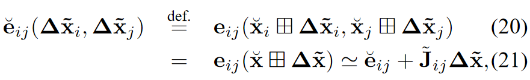
ここで, ˘x は元のオーバーパラメトリック空間（例えば四元数）にわたっている。 ∆̃x は、元の位置̆xの周りの小さな増分であり、最小の表現で表される。例として、3D SLAMでは、回転のパラメータ化には、単位四元数のベクトル部分が適している。 具体的には、増分 Δ̃x を6次元ベクトル 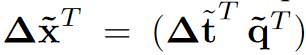で表すことができる。ここで、Δ̃t は並進を表し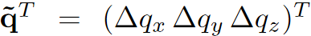は3次元回転を表す単位四元数のベクトル部分である。逆に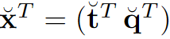は回転部分を符号化するために四元数 ˘q を使用する。このように、演算子⊞は、まず△̃qを完全な四元数△qに変換し、次に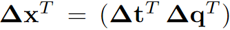という変換を△xに適用することで表すことができる。 誤差の最小化を記述する方程式では、これらの操作は⊞演算子によってうまくカプセル化される。 ヤコビ行列 ˘jij は次のように表されます。
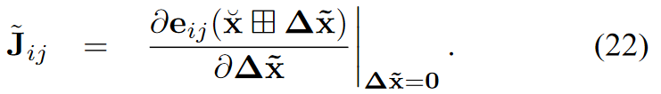
前の式でeは△̃xiと△̃xjにのみ依存するので、さらに次のように展開できる。
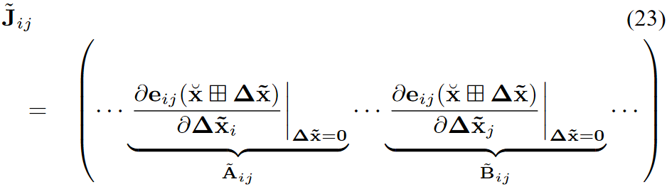
偏微分のルールを使い、ヤコビ行列が △̃x=0 で評価されることを利用して、非ゼロブロックは次のようになる。
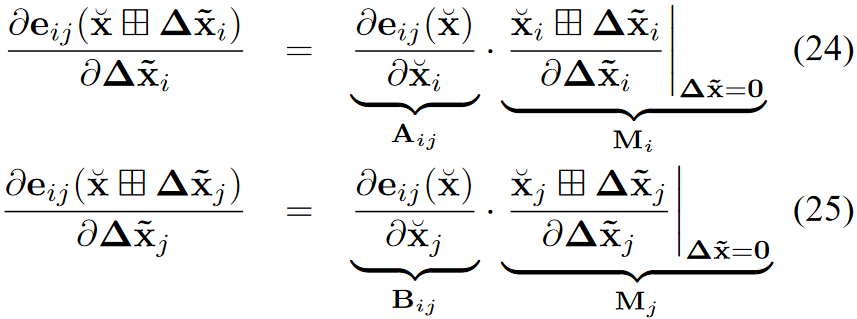
したがって、式17の多様体上で定義されないヤコビ行列から、その非ゼロブロックに、̆xiと̆xjで計算された⊞演算子の微分を乗じるだけで、多様体上のヤコビ行列を容易に導き出すことができる。表記を簡単に拡張すると，式(9)に式(21)を挿入することができ、次のような連立方程式が導かれる。
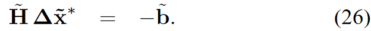
増分Δ̃x∗は、初期推測値̆xの局所的なユークリッド環境で計算されるため、⊞演算子によって元のオーバーパラメトリック空間に再マッピングする必要がある。したがって、式(16)は次のようになる。
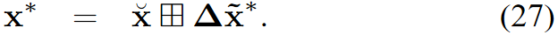
したがって、多様体上で最小化問題を形式化することは、まず式(26)によって初期推測の周りの局所ユークリッド近似で増分のセットを計算し、次に式(27)によって大域的な非ユークリッド空間で増分を累積することである。 多様体表現で計算された線形システムは、ユークリッド空間で計算された線形システムと同じ構造を持っていることに注意する必要がある。 アルゴリズム2は、SLAMのためのガウス・ニュートン法の多様体バージョンである。多様体問題のヘッセ行列˘Hは、もはや軌道の情報行列ではなく、軌道の増分Δ̃xの情報行列を表している。軌道の情報行列を得るために、アルゴリズム2はポーズxの元の空間でHを計算する
Algorithm 02：アルゴリズム1の多様体版。計算量は変わらないが、特に3Dの場合には、ロバスト性が大幅に向上している。
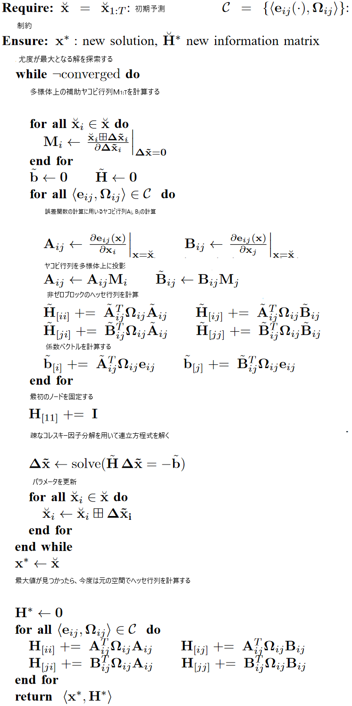
実践
このセクションでは、提案した手法のいくつかのアプリケーションについて説明する。 最初のシナリオでは、完全な2Dマッピングシステムを説明し、2番目のシナリオでは、3Dマッピングシステムを簡単に説明し、多様体表現の利点を強調する。2D レーザーベースの地図生成
シアトルのIntel研究所でレーザーによる距離センサを搭載した移動ロボットを用いて地図生成を行った。このデータは連続した時間フレーム間のプラットフォームの動きに対応する2次元変換を記述したオドメトリ測定値と、2次元のレーザー距離データで構成されている。グラフは次のように構築される。
- ロボットが0.5メートル以上移動したり、0.5ラジアン(28.6度)以上回転したりするたびにグラフに新しい頂点を追加し、現在のレーザー観測値をラベル付けする。
- レーザースキャンを先に取得したオドメトリ推定値と照合し，対応するエッジをグラフに追加する。ここでは、Olsonのスキャンマッチャーを応用している。
- ロボットが未知の領域を長時間移動した後、既知の領域に再び入ると、ループ閉じ込みを行い、スキャンと過去の測定値の一致を求める。現在の観測値と他のノードの観測値との間のマッチングが成功した場合、グラフに新しいエッジを追加する。このエッジには、2つのスキャンが最もよく重なり合うような相対的な変換がラベル付けされている。現在の測定値を以前のすべてのスキャンと一致させることは、ロボットの位置に関する既知の事前情報を考慮していないため、非常に効率が悪く、エラーが発生しやすい。 その対策として，過去のノード候補を，3σ限界共分散が現在のロボットのポーズを含むものとして選択する． これらの共分散は，縮小ヘッセ行列Hredの逆数の対角線ブロックとして得られる．HredはHから，新たに挿入されたロボットポーズの行と列を削除して得られる．Hredは，現在の位置を固定したと仮定したときの，すべての軌道の情報行列である．
- ループ閉じ込みが検知されるたびに最適化を行う。
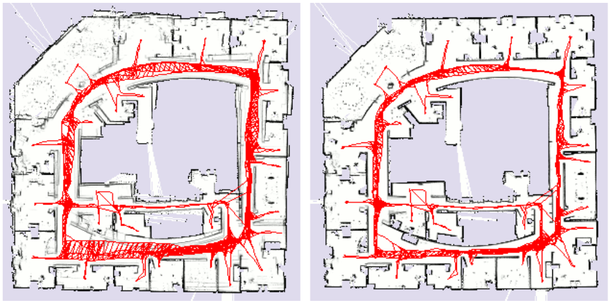
図03 最適化の有無による形成される地図の違い
左：最適化されていないポーズグラフと地図
右：最適化されたポーズグラフと地図
右：最適化されたポーズグラフと地図
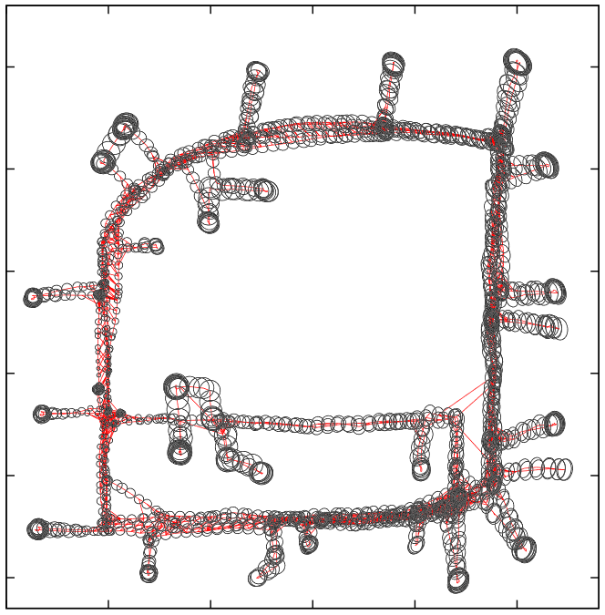
図04 実世界のデータセットに対するポーズの不確実性評価
3D レーザーベースの地図生成
前節で紹介したSLAMアルゴリズムを3Dに拡張することは、非常に簡単だ。 2Dスキャンマッチングとループ閉じ込み検出を、単一のレーザースキャンではなく、3D点群で動作する3D対応のものに置き換えるだけである。さらに、グラフの各ノードと各制約条件はSE(3)に含まれる。SE(3)の要素を表現するのに必要な最小のパラメータ数は6である(3次元の並進ベクトルと3つのオイラー角)。このパラメータ化を利用すると、アルゴリズム1が得られる。しかし、この最小の表現には特異点があり、これを回避するにはパラメータ化された状態空間を利用する必要がある。 また、最適化問題Δ̃xの相対的な摂動を最小限の表現で記述しつつ、ポーズを元のオーバーパラメトリック空間に残すこともできる。 これはアルゴリズム2につながる。 このセクションでは、シミュレーションされたロボットによって得られたポーズグラフ上で、最適化アルゴリズムのこれらの2つのバリエーションを比較する。ヘッセ行列のスパースパターンはどちらも同じであることには注意しましょう。 さらに、線形システムを計算する時間は、それを解決する時間に比べて無視できる程度である。したがって、パラメータ化の選択は主に収束速度に影響し、1回の反復に必要な時間には影響を受けない。この効果を強調するために、2つのアルゴリズムを用いて1回の最適化実行中の反復ごとの誤差の変化を示す。
ここでは，球体の表面を走行するロボットの3Dデータセットをシミュレーションした． 測定値には大きな誤差があり、オドメトリ情報を使用してシステムを初期化した結果、図11の左部分に示すグラフが得られた。 この初期推測から出発して，ガウス・ニュートン・アルゴリズムを，多様体の線形化を行った場合と行わなかった場合(すなわちオイラー角を使用するか否か)比較しながら実行した．図12は、2つのアプローチの反復処理中の誤差の変化を示している。 まず、どちらのアプローチも誤差を減らすことができた。 しかし、特異点を適切に考慮しないと、アルゴリズム1は発散してしまうが、アルゴリズム2は正しい解に収束する。
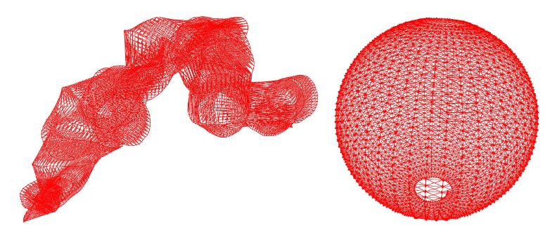
図05 球体上を移動するロボットをシミュレーションして得られたポーズグラフ
左：初期設定
右：最適化を行い、完全に復元された球体
右：最適化を行い、完全に復元された球体
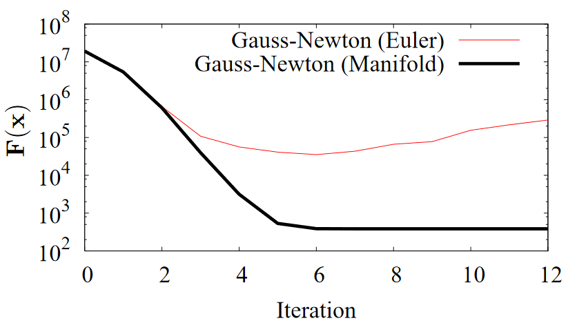
図06 3D球体データセットに対するオイラー角を用いたガウス・ニュートン最適化と多様体線形化による誤差F(x)の変化。